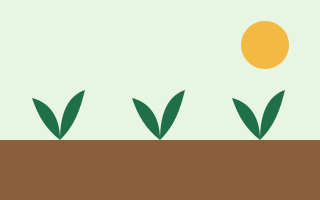
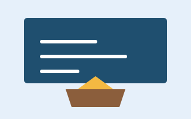

Horta Comunitária
Produção de hortaliças orgânicas distribuídas gratuitamente às famílias cadastradas, com oficinas de alimentação saudável.
Informações
- Público
- Famílias do Jardim Esperança
- Frequência
- Mutirões aos sábados
- Início
Cada iniciativa nasce de uma necessidade real da comunidade e é conduzida por voluntários com o apoio de moradores e parceiros.

Produção de hortaliças orgânicas distribuídas gratuitamente às famílias cadastradas, com oficinas de alimentação saudável.

Apoio em português e matemática para estudantes do ensino fundamental, no contraturno escolar.
Cursos de informática básica, uso seguro da internet e introdução à programação para jovens e adultos.